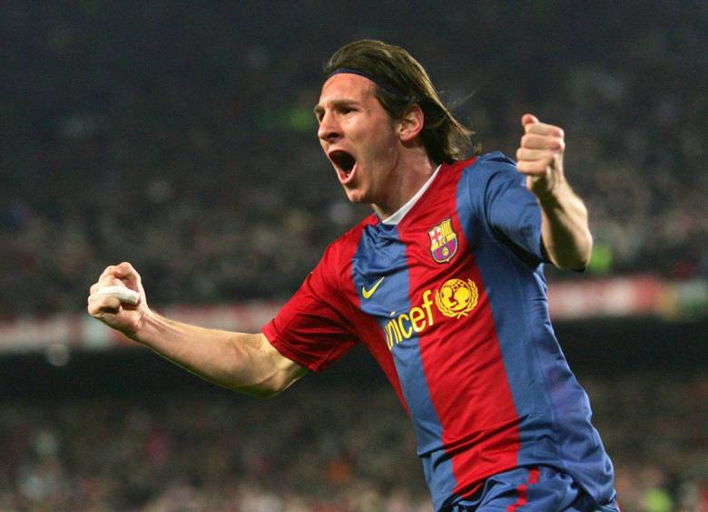
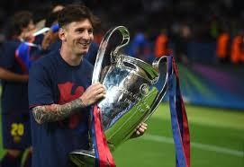
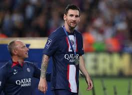
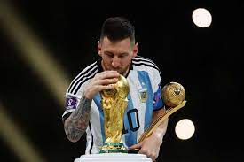
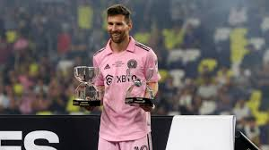
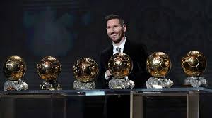

Lionel Andrés Messi Cuccittini hijo de Jorge Messi y Celia Cuccittini nació el 24 de junio de 1987 (36 años) en Rosario, Argentina.
Nacido y criado en la ciudad de Rosario, a los 13 años se radicó en España, donde el Barcelona accedió a pagar el tratamiento de la
enfermedad hormonal que le habían diagnosticado de niño. Después de una rápida progresión por la Academia juvenil del Barcelona,
hizo su debut oficial con el primer equipo en octubre de 2004, a los diecisiete años.
Empezando asi una carrera donde ah ganado 43 titulos, a marcado 830 goles y repartido 367 asistencias
pasando por distintos equipos.PSG (2021-2023) Inter de miami(equipo en el que esta en la actualidad)
la seleccion de fútbol de Argentina(2005-actualidad) y en el Barcelona(2004-2021) siendo en ese equipo
en el cual paso mayor parte de su carrera.





Enviar sugerenciasANGEL AURELIO SIORDIA ROSAS